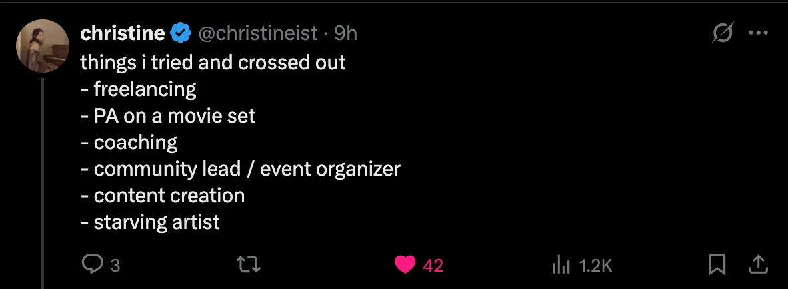

- Mythopoesis 1 - same life story, different conclusions
- I am agentic as fuck (as was my dad)
- I like this framing - “tried and crossed out” → https://x.com/christineist/status/1983306506109104452

I picked my undergrad degree for pragmatic reasons and didn’t come from an environment where what degree to take was a talked about thing (I totally lone-wolfed it)
I wanted to do good in the world and had no role models and Effective Altruism seemed like the perfect thing
I became very agentic near the end of my time at university
-
Oh but also even before
- Taught myself the guitar
- Maybe more stuff…
-
Getting into EA and having calls with EAs
-
Agentic at Particle Tech
-
Agentic re: New Harvest conferences, no precedent for this kind of shit in my family! And history
-
Agentic re: doing Master’s
-
Agentic re: teaching myself to code
-
Agentic re: learning how to learn, making website about it, doing free coaching
-
Agentic re:
-
Cellular Agriculture UK, LinkedIn etc
-
I was very agentic at Alvea (e.g., feedback from Ethan)
-
I was very proactive about getting involved in the cellular agriculture space
- Note, this is missing in my “eras” thing! Going to New Harvest conferences etc, first really agentic thing I ever did, and like dude, fucking shout out to me. Flying off to New York as probably a teenager (?) or 20 year old in order to volunteer at conferences to network. Like, that’s baller as shit are you kidding me
Realising how poorly educated I was
- Asking my friend Dan about left vs right wing as a teenager and really not getting it
- First job out of undergrad, reading Andrew Marr book on English history of last ~100 years
- Reading 52 non-fiction books in 52 weeks during Masters
- Subscribing to the Economist (and realising how out of the loop I was!)
-
I went to Asia after the breakup and was socially anxious and isolated
-
I spent 1.5 years “travelling” but spent most of my time being introverted and being alone and didn’t do it “the right way”
-
I have had a much less impressive career than the big EAs etc
- A life of big gambles without wise elders to talk to
- A life of high agency + idk cPTSD/being an absolute pioneer in my family (lol) (idk)
To fold in
Agency → consensus-ism as another example, sticking with it, reading the recommended stuff, taking it seriously
”I’ve always known my preferences, and now I’m totally safe to live by them”
- By default, I construct the story of my life as a long list of failures/tragedies
- (And to be clear, it does make sense, because a lot of this sit is unfortunate and sad)
I always knew what I did and didn’t want to do as a kid
- Default story: “I was a passive kid”, because I was shipped around from places I didn’t want to be (high conflict house, now have to go to dads at weekend, have to go to pub with him and sister, have to go on holiday with mum and sister despite high conflict, etc)
- And yes, I did have to do those things, I didn’t have a choice. I didn’t have agency, I was a child/teenager. But I did have agency in how I acted, and I knew that I didn’t want to do those things, so I was often disagreeable, signalled that we were doing things that I didn’t want to do, found my own space, found video games, etc
- E.g., we’d go to my mum’s friend’s house every few months for a holiday, which I wouldn’t want to do, because I didn’t like spending time with my mum and sister, as they were so toxic. So I’d take my playstation and set up in a room and spend the time mostly on my own
- And when I was ~19, I had the false insight of “oh, it was video games fault, if only I hadn’t played so many video games, I wouldn’t be so awkward”. But no, dude, the video games were my solution to the problem of being in unpleasant environments. Conflict-ridden house, holidays with the conflict-ridden people, video games (and Harry Potter) were safe havens.
I knew my preferences as a teenager too
- I knew that being in a band felt bad (I was just too conditioned to be afraid of saying “no” to stop)
- etc
I love saying “no” to things I don’t want to do
- Leaving things early, or saying no to things, have been some of the best moments of my life
It has taken a lot of unlearning to feel safe saying “no” and now I can
- Took a lot of unlearning to feel safe to say “no”
- Being forced to go along with things I didn’t want to do for my entire childhood/teenage years (because the entire home family system was something I didn’t want to engage with), and being pressured to e.g. spend 1:1 time with my mum because she was lonely, meant that when I entered putative adulthood, I found it very hard to say “no” to things, to choose my own preferences - it felt selfish and wrong.
- ChatGPT → “Yes—growing up having to regulate a parent’s loneliness and go along with a family system you didn’t choose is classic codependent conditioning, where enmeshment and parentification blur boundaries and train you to prioritize others’ needs over your own so that saying “no” feels selfish.”
I love saying “no” to things
- Saying “no” to things:
- I’ve said outright nos to 4 job opportunities recently. I’ve been invited to private hiring rounds because I did very well on some job applications in the EA scene, but I don’t want to work at EA orgs, so yeah, thank you for the opportunity and it still feels kinda mad to say no but also hell yeah feels so good
- Insane aliveness in my body when I said no to these things
- Not getting on train to see uni “friends”
- Leaving JessCamp early
- Leaving Asia
- And, as hard as it was, my giant breakup too
- And, more of a grounded feeling of “yes, I can do this, this is normal for me now”, re:
- Hippy retreat
- Saying no to jobs
- Not doing a bunch of stuff at the EA hotel
Genuinely preferring spending time alone
- cPTSD is hard to get over, people don’t feel safe, so of course it felt much better to spend time alone. Unsafe and uncomfortable around people → totally safe and comfortable alone. Makes complete sense. So yeah, masters, undergrad, etc. Remember how it felt to be around people. Remember how it felt to be alone. Coherence therapy innit, this was totally coherent.
- And Albania, not just “wah I was alone the whole month like an idiot” → think what I was just leaving behind! Think how great it felt to no longer be collaborating with simmo, to no longer be in insane humidity, etc. It was glorious to be so alone, seriously! I loved it! I had 0 desire to talk to people! Seeing Michael Ashcroft was nice but it was like, nice, great one-off meal, this didn’t make me think that I’ve been super lonely without realising it
Appendix
![[Mythopoesis → I am very interesting-1761566990752.webp]]
I’ve never been impressed by “shallow” stuff because my house was on fire
Re: like, being “highly non-sensitive”
I like winter and dislike summer and don’t like views because it’s like mum forcing me to go out with them
Safe in my room, ultimately, I think is the thing. I am of course highly sensitive
I’m not impressed by shallow things like football and views and shit because there’s a deeply sad part, my house is on fire, suddenly by family was ruined inexplicably and we just carried on
(However I did find music and stuff very important. Wonder if there’s a way in which this fits. E.g., Harry Potter let me forget about my burning house. Music let me process emotions, also escape the burning house, also to see people self-express, always ways to feel cool and good (White Stripes, Strokes, etc))
Views
Other countries
Cities
Meditation
A sense of “who cares”
Vs findinf wirting and music very profound - Kendrick and DFW
With a girlfriend I care about travellling more fwiw
Video games etc helped me get through my childhood
There is an underclass of people who need escapism to get through their childhood
The true underclass (e.g. the very working class people who my sister was born into) use alcohol and weed etc
My underclass use video games
The middle class get to like, have a nice family, so there’s nothing to escape from
Making some kind of diagram b/c there’s no satisfying stratification here that I’m aware of. Working class/middle class/upper class is far too coarse
1. My interests weren’t legible to my parents but were still real
- My interests weren’t legible to either parent
- But they were still valid!
- Not only did I sadly not like football/classic rock/cars, but also I liked introverted stuff that is kind of illegible (but then again, I could argue that football/classic rock/cars are totally illegible to me)
- Ultimately, by some luck of the draw which probably happens a lot, I was very different from both parent. An intense introvert cherisher, almost autistic in how obsessed I would get with things, things that were illegible to them, and they didn’t seem to have the willingness to try to engage
What I liked
- Harry Potter. I was insanely obsessed with Harry Potter, I read it on repeat, non-stop, for years. Neither parent ever read it! This seems mad to me - how could you not want to see what the fuss was about, and to see if you could bond over it!
- Huge disconnect → football dad, bookish son (reading a kids book series). Mum who doesn’t read
- Scott Pilgrim. I got really into this as a teenager, and it’s very teenager-y
- Video games → this is what gave me sanctuary in my high conflict home, and I’m very grateful to them.
- Writing → I discovered a real aptitude for writing
It’s a shame that my parents didn’t engage with my interests
-
Neither parent read Harry Potter; we could have read it together, watched the films!
-
Me and my dad could have played video games together, but alas, he wasn’t interested, or at least, the thought didn’t seem to cross his mind. I remember him having a go on my PS1 when he still lived with us and just not getting it. I think he hated being bad at things
-
Neither parent read or encouraged my writing from what I can remember
-
“I don’t have much to offer/I don’t have any interests”
-
This is downstream of my mum too, I think…? Because I spent more time with her, and she never made me feel boring, she made me feel illegible
7. My interests are valid despite my parents not understanding them
What I have become
- I’m now 29, and the obsession with Harry Potter has of course subsided, but it morphed into other things over time, like e.g. an obsession with David Foster Wallace. Obsession with art (you may say HP isn’t art, but you know) is a theme in my life. Harry Potter, the Metal Gear Solid series of video games (lol), Scott Pilgrim, then David Foster Wallace, Kendrick Lamar, Conan O’Brien, lesser obsessions (more like strong admirations) for e.g. Fiona Apple and D’Angelo. Albums that mean so much to me, albums that I cherish. Something that I haven’t found a clean label for yet, but something around being deeply passionate about… I don’t know what, individual artists who share themselves earnestly, or something, I don’t know. I don’t know what “type of guy” this makes me, this doesn’t seem to be covered by the enneagram. “Deeply passionate about art, writing, music, rather than external things like… nature, holidays, sports, etc”.
- Enneagram 3w4 → ==3 core = build/achieve; 4 wing = depth, artistry, originality; result = “the producer/creator who wants the work to be both excellent and true.”==
- I think I’m very introverted, very like, focused on the internal world, like, the external world of football and cars makes no sense to me. So, there’s a fundamental clash, and it’s difficult for me to share this stuff